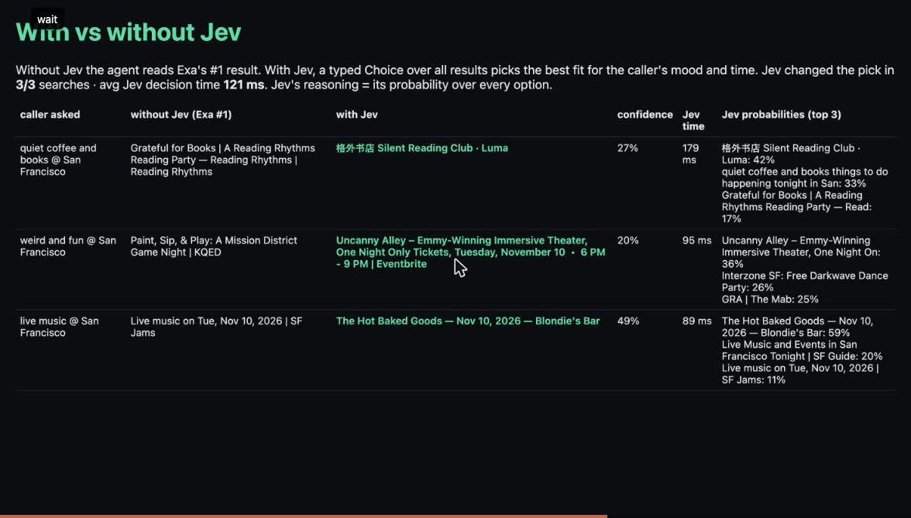

Voice agents fail silently: the caller just hangs up. CallLens shows exactly which turn of a Vapi call broke and why, judges every turn with TypeSafe Jev in ~120 ms, and self-heals the live agent in one click.
Caller → Deepgram Nova-3 (ears) → Vapi (orchestration) → tool server: Exa live search → Jev typed Choice → Deepgram Aura (voice).
CallLens pulls each call from the Vapi API, attributes latency per stage, has Jev label every turn (slow, misheard, tool issue, talked over, off track), score the whole call and detect the caller’s language, then turns findings into a live PATCH /assistant: Deepgram keyterms, a shorter endpointing wait, multilingual mode.

| Vapi Composer | CallLens | |
|---|---|---|
| Root cause | Prompt re-asks location | Transcriber misheard “Embarcadero” |
| Latency | Not mentioned | Transcriber 1530 ms = bottleneck |
| Provider fix | “No change needed” | Deepgram keyterm + 0.4 s endpointing, applied live |
| Speed | ~45 s LLM agent | ~120 ms per Jev judgment |
Composer is right about the prompt; CallLens sees the speech layer. Best together.